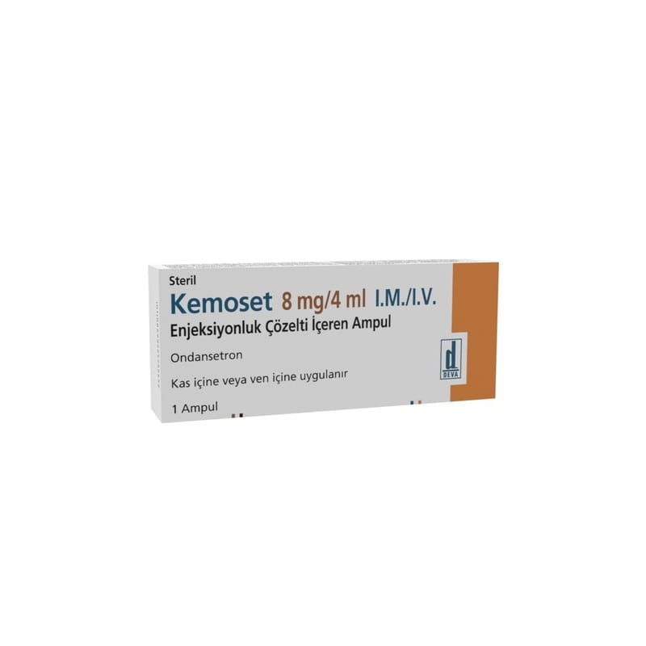

Kemoset 8 mg/4 ml IM/IV Enjeksiyonluk Çözelti İçeren Ampul, 1 Adet

Ne için kullanılır
KT · Bölüm 1KEMOSET ondansetron hidroklorür dihidrat etkin maddesini içerir. Enjeksiyon veya infüzyon için partikül içermeyen, renksiz, berrak, kokusuz çözelti içeren bir ampullük ambalajlar halindedir.
KEMOSET anti-emetik olarak adlandırılan bir ilaç grubuna dahildir. Bazı ilaç tedavileri (örn; kanser ilaçları) kendinizi hasta hissetmenize ve kusmanıza neden olabilir. KEMOSET kendinizi hasta hissetmenizi veya kusmanızı önler. KEMOSET, ilaç veı şınla yapılan kanser tedavilerine bağlı bulantı ve kusmayı önlemek için kullanılır. Ayrıca, ameliyatlardan sonra ortaya çıkan bulantı ve kusmaları önlemek için de kullanılır.
Doktorunuz size ve sizin ko şullarınıza uygun olarak bu ilacı seçmiştir.